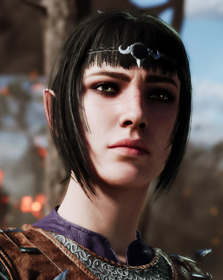

Шэдоухарт (ориг. Shadowheart) — игровой персонаж, а также один из десяти возможных спутников в игре Baldur's Gate III.
Поскольку она является одним из игровых персонажей, игрок может выбрать Шедоухарт в качестве главного героя, в ином случае её можно завербовать как компаньона. Также доступна в качестве любовного интереса для протагониста любого пола и расы.